Índice
Consulte a página dosRequisitos do sistema para se certificar de que o seu computador cumpre os requisitos de hardware necessários para a instalação e execução do Xubuntu. Geralmente, o Xubuntu executa na maioria dos computadores (PC ou Mac) fabricados a partir de 2007 e possuam um sistema operativo como o Windows XP, o Mac OS X 10.5 ou superior.
![[Nota]](../../libs-common/images/note.png)
|
|
|
Caso se encontre a instalar o Xubuntu num computador portátil, é recomendável que o mantenha ligado à corrente elétrica durante a instalação de forma a prevenir uma perda súbita de energia que possa corromper o sistema. Caso esteja a executar o Windows 10 e possua a Tecnologia de Armazenamento Rápido (RST) da Intel em funcionamento, terá de a desligar antes da instalação. |
Visite a página deTransferênciaspara transferir a imagem ISO da sua edição selecionada do Xubuntu. Caso pretenda estabilidade, é recomendável transferir o lançamento LTS (Suporte a Longo Prazo), o qual é suportado durante 3 anos. O ficheiro ISO pode ser transferido com um cliente BitTorrent, tal como o Transmission ou o qBittorrent, ou através do seu navegador a partir dos diversos servidores globais existentes.
O ficheiro precisa de ser armazenado num meio de arranque, tal como uma unidade USB, um cartão de memória SD ou um disco ótico de DVD.
Caso possua uma unidade USB ou um cartão SD com um armazenamento mínimo de 2 GB, pode utilizar uma das seguintes aplicações para armazenar o ficheiro ISO: Rufus (Windows), Etcher (Windows, Mac, Linux), Discos do GNOME ( gnome-disk-utility
gnome-disk-utility
Caso possua um disco DVD virgem e uma unidade de gravação de DVD, é possível gravar a ISO através de uma destas aplicações, se o seus sistema operativo não tiver funcionalidades para tal:InfraRecorder (Windows), Brasero ( brasero
brasero xfburn
xfburn
Caso pretenda instalar o Xubuntu juntamente com outro SO, é recomendável fazer uma cópia de segurança dos dados do SO existente como precaução no caso de algo correr mal. Pode fazer a cópia de segurança dos seus ficheiros para uma unidade USB e/ou para um disco rígido secundário no seu computador.
Alguns computadores podem necessitar de configurações adicionais antes da instalação do Xubuntu poder ser iniciada. Consulte esta secção caso não consiga fazer o instalador arrancar ou se o seu hardware não for detetado corretamente.
Aviso: Esta é uma funcionalidade informática avançada, pelo que deve ser efetuada com cautela. As teclas F2 e Delsão comuns para acesso às configurações da BIOS.
Intel RST
Arranque Seguro / Windows 8/10 / Arranque Rápido / Inicialização Rápida
Segurança do macOS T.2
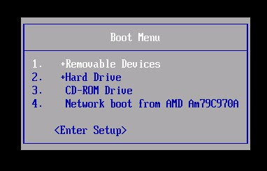
Introduza o meio de arranque no dispositivo respetivo (a unidade USB numa porta USB, o cartão SD no leitor de cartões SD ou o disco DVD na unidade de DVD) e reinicie o seu computador. Caso o seu computador se encontre configurado para arrancar a partir do meio de arranque da sua escolha, este será automaticamente arrancado. Se não arrancar automaticamente, consulte a documentação do fabricante do computador para aceder ao menu de arranque. Tal pode consistir em premir uma tecla, tal como o F12, ou utilizar um botão dedicado no computador. Nalguns casos, pode necessitar de arrancar pelo Windows para aceder à BIOS. Assim que aceder ao menu de arranque, selecione o dispositivo de arranque apropriado.
|
|
|
|
A tecla a premir para aceder ao menu de arranque depende do fabricante do computador ou da placa-mãe. A tecla F12 é a mais a comum para aceder ao menu de arranque, mas existem outras teclas alternativas comuns, como oEsc e o F10.As teclas menos comuns incluem o F11, F9, e o F8. Caso o seu computador não arranque a partir do USB mas possua uma unidade de CD ou DVD, pode utilizar oPLoP. |
Assim que o meio de arranque iniciar, irá aparecer um ecrã em branco com um teclado e os ícones de acessibilidade. Neste momento, tem 5 segundos para premir qualquer tecla para aceder ao menu de arranque do instalador, caso pretenda. Inicialmente, o menu de arranque irá apresentar um menu de seleção de idioma , seguido de um menu simples com opções para instalar ou experimentar o Xubuntu, testar a memória, arrancar a partir do disco rígido, bem como outras opções acessíveis através do premir das teclas F1 a F6 (para mais informações relacionadas com as opções das teclas de função, clique aqui).
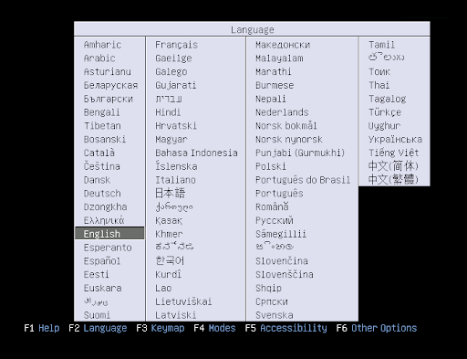
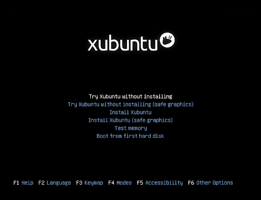
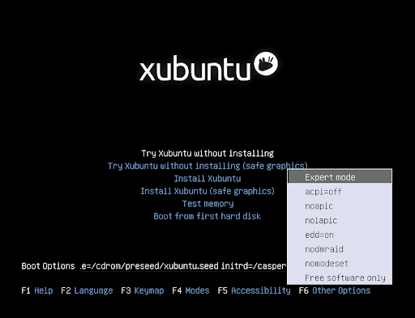
Após o ecrã de arranque inicial, os lançamentos do Xubuntu 20.04 ou superior verificam a integridade do meio de instalação por defeito, algo que pode ser ignorado se premir Ctrl+C.Esta verificação é importante uma vez que é comum que meios de instalação corrompidos provoquem falhas na instalação.
|
|
|
|
Caso obtenha um ecrã preto após a verificação de integridade, reinicie o seu sistema e selecione uma das opções de gráficos seguros do menu do GRUB. Por vezes, isto ocorre quando as placas gráficas não funcionam corretamente com os seus controladores de código aberto. Se isto acontecer após a instalação com a sua placa gráfica NVIDIA, selecione a opção 'modo de recuperação' do menu do GRUB e instale o controlado gráfico proprietário da NVidia a partir da aplicaçãoControladores adicionais. |
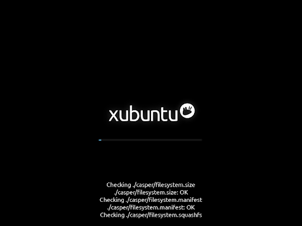
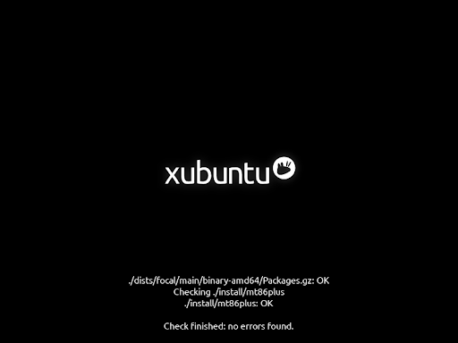
Será saudado pela imagem de boas-vindas do instalador assim que o mesmo iniciar. Pode selecionar o idioma do instalador a partir da lista apresentada à esquerda e premir o botão para iniciar o processo de instalação.
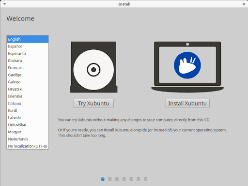
|
|
|
|
Caso tenha selecionado uma das entradas Experimentar o Xubuntu ... no menu de arranque do instalador ou o botão no ecrã de boas-vindas, pode iniciar ou reiniciar o instalador se clicar no ícone do ambiente gráfico Instalar o Xubuntu. |
O próximo passo do instalador será o ecrã da Disposição do teclado. Aqui pode selecionar a sua disposição do teclado, caso esta não tenha sido corretamente detetada. Caso não tenha a certeza acerca da disposição do seu teclado, pode premir o botão Detetar disposição do teclado para avançar para um breve procedimento de configuração e testes a fim de garantir de que a disposição funciona conforme pretendido no campo de teste do teclado. Clique no botão Continuar para prosseguir.
Caso não se encontre ligado à internet mas o seu computador possua Wi-Fi, verá o ecrã Ligações sem fios onde pode ligar-se a uma das redes disponíveis ou continuar sem se ligar.
Após clicar no botão , irá chegar ao ecrã de Atualizações e outro software. Aqui, tem as opções de transferir atualizações durante a instalação, caso se encontre ligado à internet, e definir se instala software de terceiros, tais como o controlador da placa gráfica NVIDIA e codecs multimédia para a reprodução de ficheiros multimédia. É recomendável ter as duas opções selecionadas.
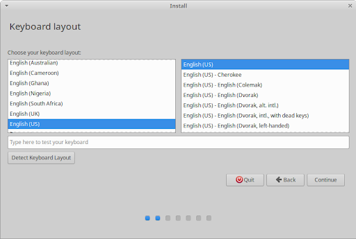
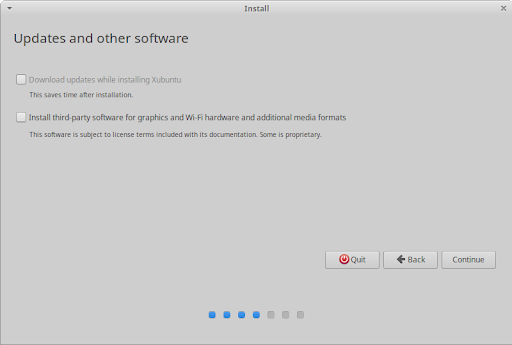
|
|
|
|
Note: If was disabled or unselected, you can
run the Software Updater application after the installation. If
was
unselected during installation, you can open the Software & Updates app after the installation,
enable the repository on the Ubuntu Software tab,
and then install the drivers on the Additional Drivers tab to install drivers. You would also need
to install the |
O ecrã seguinte do instalador é o ecrã Tipo de instalação, cuja lista de opções de instalação pode variar dependendo do(s) sistema(s) operativo(s) instalado(s) no seu disco rígido. Recomenda-se que os utilizadores habituais escolham Apagar o disco e instalar o Xubuntu, para limpar totalmente o disco e instalar o Xubuntu como OS único, ou Instalar o Xubuntu em conjunto com outro [SO], para criar um menu de arranque duplo com o Xubuntu e um sistema operativo existente ([SO] é o SO existente, neste caso, o Microsoft Windows XP Professional na captura de ecrã). Os utilizadores avançados podem escolher a opção Outra coisa, a qual lhes oferece a possibilidade de criar, formatar, eliminar e atribuir partições.
Caso escolha a opção de instalar o Xubuntu em conjunto com um sistema operativo existente, ser-lhe-á dada a opção de ajustar a quantidade de espaço que o Xubuntu irá ocupar no disco rígido após clicar no botão .
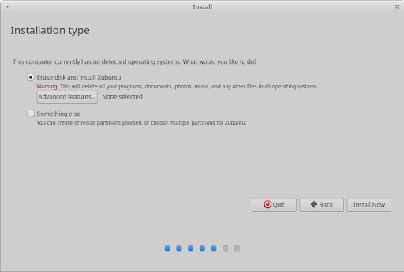
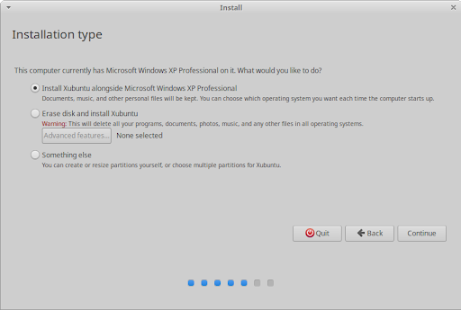
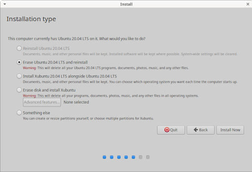
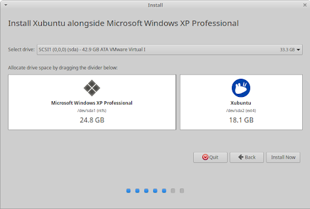
Ao clicar no botão , o instalador irá exibir um diálogo de confirmação antes de realizar alterações não reversíveis aos dados e às partições do disco rígido. Leia as alterações cuidadosamente e, caso esteja de acordo, clique no botão .
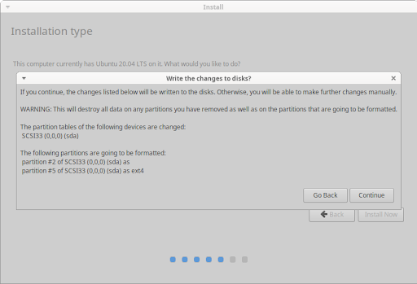
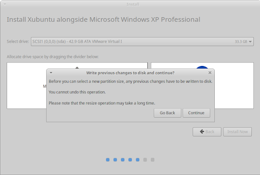
O próximo ecrã do instalador será o ecrã Onde está?. Aqui, pode alterar o nome da sua cidade no campo de texto ou clicar no mapa para selecionar o seu fuso horário. Caso se encontre ligado à Internet, a sua localização será detetada automaticamente, Clique no botão para prosseguir.
No ecrã Quem é?, assim que introduzir o seu nome, o nome do seu computador e um nome de utilizador serão sugeridos automaticamente. Caso pretenda, pode altera-los. O nome do seu computador é o nome que o seu computador irá apresentar quando aparecer na rede, enquanto o nome de utilizador será o nome da sua conta e de início de sessão.
De seguida, introduza uma palavra-passe, a qual será avaliada com base numa escala de 'curta', 'fraca', 'boa' ou 'forte'. Uma palavra-passe forte possui um mínimo de 8 caracteres, incluindo uma mistura de letras maiúsculas, minúsculas, números e símbolos. É altamente recomendada a utilização de uma palavra-passe forte. Depois, terá a opção de selecionar se o seu computador irá solicitar a introdução da palavra-passe no primeiro início de sessão ou se inicia sessão automaticamente. Ser-lhe-á sempre solicitado para introduzir a palavra-passe quando bloquear o computador ou quando o ecrã expirar por inatividade.
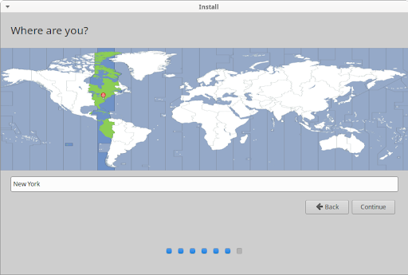
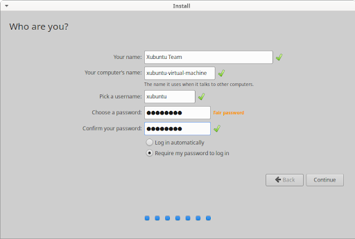
Agora, o instalador irá iniciar a instalação do Xubuntu em segundo plano. Durante este processo, os diapositivos da instalação irão ensinar-lhe um pouco mais acerca do Xubuntu, dos seus canais de suporte e da sua comunidade.
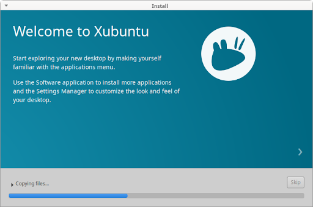
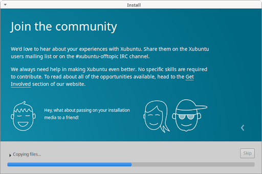
Após todos os ficheiros terem sido copiados para o disco rígido e as configurações terem sido terminadas, irá aparecer uma janela a solicitar que reinicie o computador.Clique no botão e ser-lhe-á solicitado que remova o meio de instalação e pressione Enter para reiniciar.
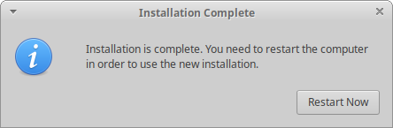
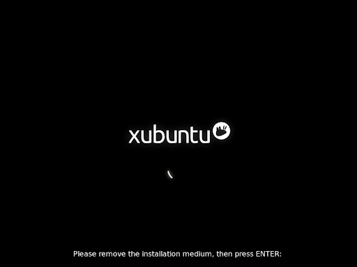
Parabéns! Instalou o Xubuntu com sucesso e agora está na altura de começar a desfrutar dele. Assim que o computador reiniciar, irá entrar automaticamente no ecrã de início de sessão do Xubuntu ou verá, caso possua vários sistemas operativos instalados no disco rígido, o menu de arranque do GRUB, o qual lhe permite escolher entre iniciar o Xubuntu ou outro sistema operativo instalado.
 |
 |
|
| Capítulo 1. O que é o Xubuntu? |

|
Capítulo 3. Introdução |